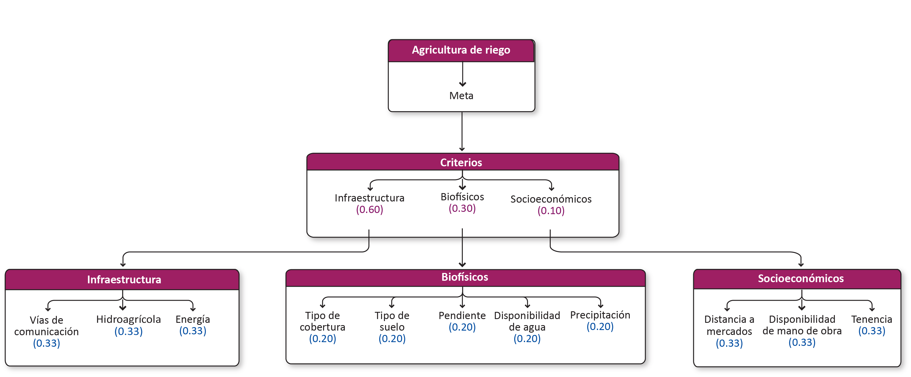

Agricultura tecnificada-En proceso de actualización¶
1. Agricultura de riego¶
1.1 Modelo de decisión¶

1.2 Criterios¶
1.2.1 Infraestructura¶
| Criterio | Definición |
|---|---|
| Vías de comunicación | Distancia a caminos, brechas y carreteras para el transporte de insumos y productos. |
| Hidroagrícola | Distrito de riego y unidades de riego. |
| Energía | Distancia a red de transmisión eléctrica. |
1.2.1.1 Vías de comunicación¶
Distancia a caminos, brechas y carreteras para el transporte de insumos y productos.
1.2.1.2 Hidroagrícola¶
Distrito de riego y unidades de riego.
1.2.1.3 Energía¶
Distancia a red de transmisión eléctrica.
1.2.2 Biofísicos¶
| Criterio | Definición |
|---|---|
| Tipo de cobertura | Tipos de vegetación y usos de suelo. |
| Tipo de suelo | Edafología. |
| Pendiente | |
| Disponibilidad de agua | Posibilidad de extraer agua subterránea, considerando el nivel piezométrico. |
| Precipitación | lluvia anual |
1.2.2.1 Tipo de cobertura¶
Tipos de vegetación y usos de suelo.
1.2.2.2 Tipo de suelo¶
Edafología.
1.2.2.3 Pendiente¶
1.2.2.4 Disponibilidad de agua¶
Posibilidad de extraer agua subterránea, considerando el nivel piezométrico.
1.2.2.4 Precipitación¶
lluvia anual
1.2.3 Socioeconómicos¶
| Criterio | Definición |
|---|---|
| Distancia a mercados | Distancia a las principales localidades en las que se venden los productos agrícolas. |
| Disponibilidad de mano de obra | Distancia a localidades/municipios donde existe un mayor porcentaje de población económicamente activa ocupada en el sector primario. |
| Tenencia | Tenencia de la tierra. |
1.2.3.1 Distancia a mercados¶
Distancia a las principales localidades en las que se venden los productos agrícolas.
1.2.3.2 Disponibilidad de mano de obra¶
Distancia a localidades/municipios donde existe un mayor porcentaje de población económicamente activa ocupada en el sector primario.
1.2.3.3 Tenencia¶
Tenencia de la tierra.